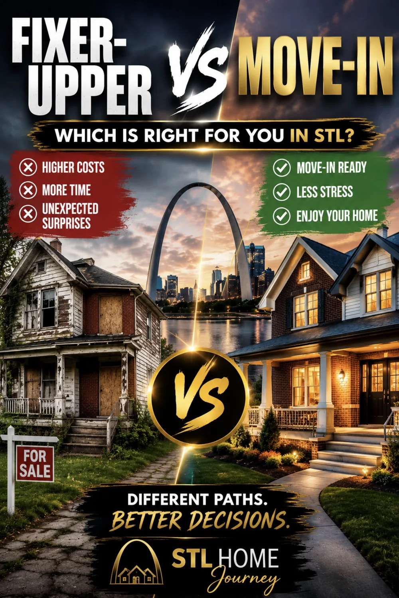

STL Home Journey
George Kindler
13 Years Experience At Your Fingertips
St. Louis has the largest price gap between fixer uppers and move-in ready homes of any major metro — 64% below on average. But the renovation costs, financing choice, and neighborhood shift change the comparison completely. Here's what your budget actually buys on both paths.

Different paths. Better decisions. The tradeoffs every St. Louis buyer should understand before choosing a price range.
St. Louis fixer uppers average 64% below move-in ready homes — the largest spread of any major metro in the country. A move-in ready home in Oakville sells for $360,000. The fixer upper in the same zip code sits at $311,000. In Kirkwood the gap is wider — $400,000 for a fixer upper versus $600,000 move-in ready.
That spread attracts buyers. And it misleads them.
The fixer upper price is what you pay at closing. What you spend after closing — kitchen, bathrooms, roof, HVAC, electrical — is not in that number. A buyer who sees $311,000 and thinks "I'm getting a deal" may be right. Or they may be buying a $311,000 house that needs $90,000 of work, putting them at $401,000 total — above the move-in ready price in the same zip code, in a home they cannot fully live in for months.
Nationally, homes marketed as fixer-uppers sit a median of 53 days on the market compared to 50.5 days for similarly priced move-in ready homes — and they're often smaller, with higher repair and renovation costs that vary greatly by scope. In the St. Louis market the condition gap between fixer upper and move-in ready is more dramatic than most buyers expect because of the age of the housing stock. The city and inner-ring suburbs have significant inventory built between 1920 and 1970 — brick construction that holds up structurally but carries aging electrical panels, cast iron plumbing, and deferred system maintenance that shows up fast in inspection reports.
These are real St. Louis market ranges, not national averages. Labor and material costs here are lower than coastal markets but the housing stock presents specific issues — Federal Pacific electrical panels in thousands of South County homes, cast iron sewer laterals in most South City brick bungalows, and tuckpointing needs that accumulate over decades of freeze-thaw cycles. The numbers below reflect what buyers actually encounter when they get contractor bids after going under contract.
Before choosing between paths, make sure you understand the hidden risks that come with lower-priced homes. What buyers regret most after buying a cheap house in St. Louis covers the infrastructure issues — sewer laterals, basement moisture, cosmetic flips — that catch buyers off guard after closing.
The items buyers walk past at showings are the ones that cost the most. A Federal Pacific Stab-Lok electrical panel looks identical to a modern panel from across the room. Cast iron sewer lateral under the basement floor is invisible. Negative grading pushing water toward the foundation is not obvious on a sunny day in May. This is why the walkthrough matters more on a fixer upper than any other purchase — and why getting a contractor through a property before you write the offer is money well spent.
What to Look For When Buying a House in St. LouisNot all St. Louis markets have meaningful fixer upper inventory. The concentration is specific — and understanding it changes where you search and what you expect to find.
The highest density of fixer upper opportunity in the metro. Brick bungalows built between 1920 and 1955, many with original cast iron plumbing, electrical that was upgraded in the 1970s but not fully replaced, and deferred tuckpointing. Fixer upper prices in South City range from $78,000 to $265,000 depending on condition and zip code. The neighborhoods — Bevo Mill, Dutchtown, Tower Grove South, Southampton — have strong bones and improving demand. The buyers who do best here know the scope before they close.
Florissant, Hazelwood, Berkeley, and Normandy offer fixer upper inventory at some of the lowest price points in the metro — $78,000 to $195,000. The housing stock is predominantly ranch and split-level construction from the 1950s and 1960s. Markets here move faster than buyers expect — Hazelwood has a 52% first-weekend sell rate even on dated inventory — so pre-offer contractor walkthroughs are essential.
Affton, Mehlville, and Oakville have fixer upper inventory in the $235,000 to $311,000 range — the price point where a moderate renovation can produce a finished home at or below the move-in ready median. These are the markets where the fixer upper math is most compelling for buyers in the $70,000 to $90,000 income range. Competition is real even on dated inventory.
Arnold, Festus, and Imperial offer fixer upper opportunity with lower property tax rates than St. Louis County — which meaningfully changes the monthly payment math. Slower markets give buyers more time to negotiate scope into the purchase price.
The financing decision on a fixer upper does not just change your monthly payment. It changes which neighborhoods are in range. A buyer at $80,000 income shopping for a fixer upper with $45,000 in planned renovation will land in different zip codes depending on whether they use cash reserves, a HomeStyle loan, or FHA 203k — because each path changes the effective purchase price that gets matched against the market.
You borrow against the purchase price only. Renovation is paid from savings after closing. Monthly payment is lower because you are borrowing less. On a $240,000 fixer upper with $45,000 renovation paid out of pocket, your mortgage is $240,000. Total out is $285,000 — which matches the move-in ready budget at this income level. The key difference: reserves are $45,000 lighter after closing, and if renovation scope grows, you are drawing from whatever remains.
This path works best for buyers with strong savings, realistic renovation scope, and no hard timeline. It is the lowest-risk financing approach if the reserves can support it.
Purchase price plus renovation budget rolled into one conventional loan. One closing. Rate runs approximately 1% above a standard conventional rate — on a $285,000 loan that is roughly $175 more per month. No mortgage insurance with 5% or more down. Reserves stay intact. The tradeoff is higher monthly payment and more underwriting complexity — the lender reviews renovation scope and requires contractor approval before closing.
Caps renovation at $35,000 and limits work to cosmetic improvements — no structural changes, no foundation work, no room additions. Minimum 3.5% down, 580+ credit score. FHA 203k loans typically close in 45 to 60 days depending on the lender and project complexity. FHA mortgage insurance adds 1.75% upfront (rolled into the loan) plus 0.55% annually — on a $260,000 loan that is approximately $119 per month that lasts the life of the loan unless you refinance into conventional.
The Streamlined version works well for South City or Affton fixer uppers that need paint, floors, and a kitchen refresh — but will not work if the property needs a roof, HVAC, or electrical work beyond the cap.
No renovation cap. Structural work allowed. Same down payment and credit requirements as Streamlined, but a HUD consultant is required on projects that are structural or involve major systems. Loan proceeds are managed by the lender and distributed in phases. The Standard version is the right tool for a property that needs a roof, foundation work, or full systems replacement — but it adds process complexity. Expect 60 or more days to close and a draw schedule that governs when contractors get paid.
Not every St. Louis lender offers the 203k Standard. The 203k rehabilitation loan requires lenders who have experience with the draw process and HUD consultant requirements. Verify your lender has closed 203k loans in St. Louis before starting the process.
A buyer at $80,000 income, $20,000 down, at 7% has a move-in ready budget of approximately $285,000. Their move-in ready neighborhoods are Oakville ($360,000 median — slightly above), Arnold ($282,000 median — at range), and parts of St. Charles County. These are the markets the buyer sees when they search Zillow.
That same buyer using conventional plus cash reserves with a $45,000 moderate renovation budget needs a fixer upper at approximately $240,000 — which opens Affton ($235,000 fixer upper), Mehlville ($125,000–$219,000 range), and parts of South City where fixer uppers in the $200,000–$240,000 range exist. Same total cost. Different neighborhoods, different school districts, different character.
Using a HomeStyle renovation loan at +1%, the total loan is $285,000 — same neighborhoods as move-in ready, but they are buying a home that needs $45,000 of work and paying a higher rate for the privilege. In that scenario the fixer upper path produces no neighborhood advantage.
This table shows the neighborhoods that surface on both paths at each income bracket — where purchase price plus renovation budget lands within 5% of the move-in ready budget. These are genuine comparisons backed by real MARIS sales data, not estimated ranges.
| Income | Max Budget | Move-In Ready Options | Fixer Upper + Reno (~$45K) |
|---|---|---|---|
| $60K | $200K–$220K | Hazelwood, Florissant, St. Ann | Jennings, Riverview, Spanish Lake |
| $70K | $230K–$260K | Mehlville, Affton, Arnold | S. St. Louis City (63109, 63116) |
| $80K | $265K–$300K | Oakville, Arnold, St. Charles | Affton, Mehlville, Maplewood |
| $100K | $330K–$375K | Webster Groves, Crestwood, Lake St. Louis | Kirkwood entry, Maplewood, Brentwood |
| $120K | $400K–$450K | Kirkwood, Ballwin, Sunset Hills | Webster Groves, U. City, Olivette |
I am a Marine Corps veteran who became a real estate agent in St. Louis. I have closed VA loans on fixer uppers, watched buyers take on South City bungalows that turned into eight-month projects, and watched other buyers walk into Affton with a contractor and a clear scope and come out with exactly the house they wanted at a price that made sense.
The buyers who succeed with fixer uppers in St. Louis share one trait. They knew the scope before they made an offer — not a guess, not a hope, but an actual contractor walkthrough with a number attached. Two hours and a few hundred dollars before the offer. That is the difference between a project and a money pit.
The buyers who struggle almost always made an offer based on how the house felt. A brick bungalow on a nice street in Affton. They can see what it could be. That is a real instinct. But cast iron pipe under the basement floor, a Federal Pacific panel in the utility room, and negative grading around the foundation do not care about the potential. They have a cost. That cost has to fit inside the budget before you close, not after.
The second thing I tell buyers: the math only works if the neighborhood shifts. If a HomeStyle loan at +1% puts you in the same zip code as a move-in ready purchase, you are paying more per month for the privilege of managing a renovation. That is a lifestyle choice, not a financial one. There is nothing wrong with it — but understand what you are choosing.
VA loans complicate the fixer upper path more than most buyers realize. The VA requires move-in ready condition at appraisal — a home with a Federal Pacific panel, roof in failure condition, or active foundation intrusion will fail the VA appraisal and the deal stops. The repair must happen before closing or the loan does not fund.
VA renovation loans exist in theory. In practice, most St. Louis lenders do not offer them. If you are a VA buyer looking at a fixer upper in St. Louis, the realistic options are negotiating repairs into the purchase agreement, requesting a repair credit, or walking away. The VA appraisal protects veterans from condition issues that other loan types absorb — that protection is a feature, not an obstacle.
Pre-offer property screening is more important on VA purchases than any other loan type. What kills VA deals in St. Louis is almost always something that was visible before the offer was written.
VA Home Loan in St. Louis: What Kills Deals Before ClosingThe comparison tool runs your income, down payment, and renovation scope against 76 St. Louis zip codes with real MARIS price tiers by condition and square footage. It shows which neighborhoods offer a genuine equivalent on both paths — within 5% of the same total cost — and what each financing choice actually costs you in buying power. The only St. Louis tool built from the buyer's perspective on both paths, using real local sales data rather than national averages.